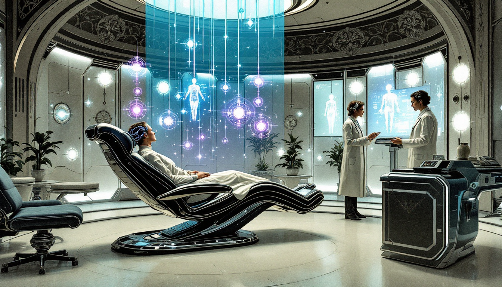
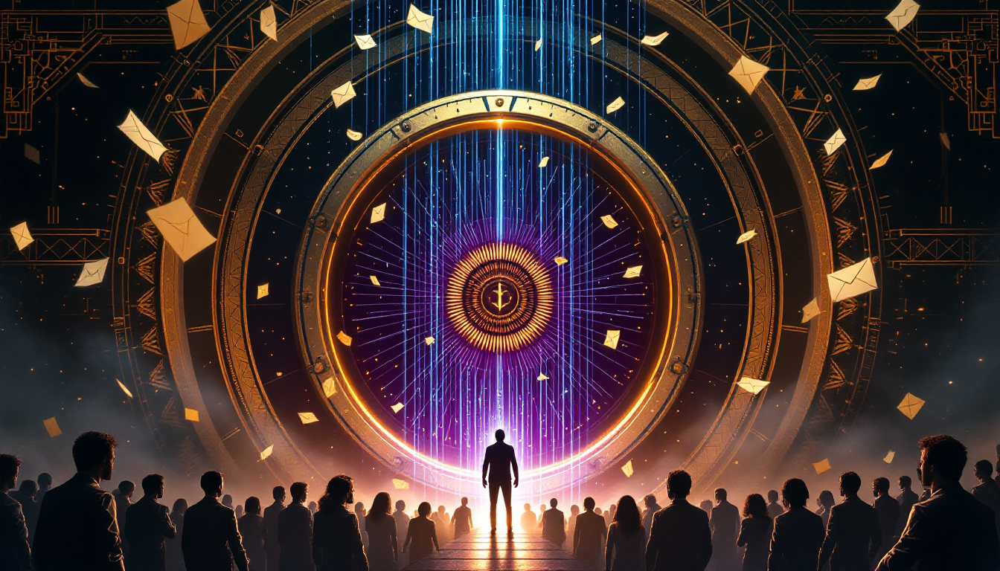
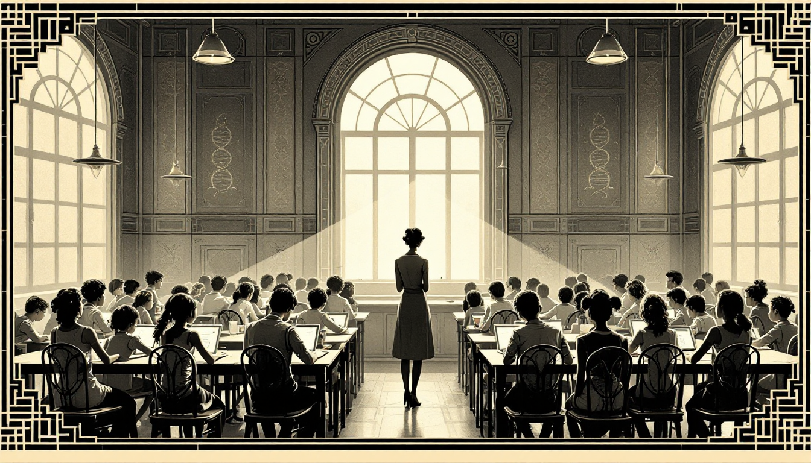

Scenario #1: The Quiet Redundancy
A near-future urban collapse driven by AI automation


The Quiet Redundancy

It's 2029, and downtown Phoenix feels like a movie set between takes. The light rail still runs on schedule, but the cars are mostly empty. The coffee shops have perfected their automated systems—your cortado arrives via a small wheeled robot that thanks you by name—but the tables sit vacant.
The collapse wasn't dramatic. No riots, no breadlines. Just a slow evaporation of purpose. When the white-collar jobs went to AI—not just the data entry, but the analysis, the strategy, the creative work—people didn't starve. The UBI checks arrive like clockwork. But something else disappeared.
The city itself is immaculate. Autonomous systems maintain the infrastructure better than humans ever did. Crime is down—it's hard to muster the energy for crime when your basic needs are met and surveillance is total. But the parks feel like waiting rooms. People walk their dogs with the glazed patience of the indefinitely paused.
Autonomy, it turns out, requires something to choose between. When the AI handles everything that matters, freedom becomes a museum you can visit but not touch. The young people seem to adapt—they've built elaborate virtual societies, status hierarchies based on gaming achievements and social media metrics. But for anyone who remembers when their decisions shaped something real, the comfort feels like a velvet coffin.
Second-Order Implications
- Mental health crisis: Depression and anxiety rates triple, but it's a quiet epidemic—people feel guilty for being unhappy when all their needs are met
- Relationship strain: Divorce rates spike as couples lose the shared project of building a life
- New religions emerge: Movements promising meaning through suffering gain followers; some communities deliberately reject automation
- Political vacuum: With nothing to vote for (AI optimizes policy), democracy becomes theater
Illustration Prompt (16:9)
art deco engraving illustration, hand-tinted vintage colors, intricate linework, ornate geometric borders -- THE QUIET REDUNDANCY: A hauntingly beautiful empty downtown city at dusk, autonomous delivery robots gliding past vacant outdoor cafe tables, a lone figure visible through a co-working space window surrounded by handmade wooden cutting boards, immaculate streets maintained by unseen machines, warm streetlights illuminating nobody, melancholic beauty of abundance without purpose, muted sunset colorsScenario #2: The Comfort Mandate
A disciplined society trades freedom for security at home


The Comfort Mandate

After the third pandemic in five years, the Home Safety Bureau was inevitable. What started as voluntary wellness checks became mandatory "domestic compliance visits." The HSB agents are unfailingly polite—trained in de-escalation, armed only with tablets and air quality sensors. They're just here to help.
Your home must now meet federal Habitability Standards. Air filtration rated for viral particles. Food storage monitored for spoilage risk. Medication compliance verified through smart pill bottles that report to your health profile. It's all very reasonable. The data shows it saves lives.
The strange thing is, people do feel safer. The ambient anxiety of the chaotic years has faded. You don't have to worry about making the right choices—the system makes them for you. Parents especially embrace it; the child safety features alone have reduced accidents by 60%. "I'd rather have my kids grow up in a nanny state than not grow up at all," one mother tells the news drone hovering at her door.
But the home has changed. It used to be the one place you could be unobserved, unoptimized, yourself. Now it's the most surveilled space of all—because that's where the risks live. Where you might eat wrong, sleep wrong, feel wrong. Where you might, in an unmonitored moment, make a choice the system hasn't approved.
Second-Order Implications
- Underground spaces: Faraday-cage rooms become a black market luxury; "dark houses" where the wealthy go to be unwatched
- Performance exhaustion: A new syndrome emerges—people who can no longer distinguish their real preferences from their compliant ones
- Family reconfiguration: Multi-generational homes become mandatory (efficiency scores), changing family dynamics
- The opt-out class: Those with resources move to "freedom zones" in rural areas, creating a new geographic divide
Illustration Prompt (16:9)
art deco engraving illustration, hand-tinted vintage colors, intricate linework, ornate geometric borders -- THE COMFORT MANDATE: Interior of a smart home under surveillance, a woman carefully arranging vitamin bottles before inspection, visible air quality sensors and smart devices on walls, a tablet displaying compliance score of 94, soft authoritarian aesthetic, everything clean and monitored, subtle tension between comfort and control, cool clinical colors with warm domestic touchesScenario #3: The Reef Resurrection
A biotech breakthrough transforms ocean conservation


The Reef Resurrection

They called it the Lazarus Coral—a synthetic organism that could survive in acidified, warming oceans while still providing habitat for marine life. When the team at the Okinawa Institute released their paper in 2028, marine biologists wept. Not from joy, but from the strangeness of hope after so many years of documenting death.
By 2035, the oceans are transforming into something unprecedented: not the ecosystems of the past, but something new. The Lazarus Coral comes in varieties now—some engineered for different depths, temperatures, chemical compositions. The reefs they form glow faintly at night, a side effect of the bioluminescent genes spliced in for monitoring. Sailors report that the Caribbean looks like a city seen from space.
The transformation has created a new kind of ocean tourism. People come not for nostalgia but for novelty—to see creatures and formations that have never existed before. The stimulation is real: every dive reveals something unprecedented. Marine biologists have become artists, designing ecosystems like architects design buildings. There are debates about aesthetics now. Should the Pacific reef be more colorful? Should they engineer fish that are easier for tourists to photograph?
The purists mourn what was lost. But the children who grow up swimming through bioluminescent forests of synthetic coral don't know to grieve. To them, this is just the ocean. And it's more alive than it's been in fifty years.
Second-Order Implications
- Intellectual property wars: Who owns a synthetic species? Biotech companies patent lifeforms; open-source biology movements pirate them
- New fishing industries: Engineered fish grow faster; traditional fishing communities adapt or perish
- Ecological unpredictability: Synthetic ecosystems behave in unexpected ways; a new science of "xeno-ecology" emerges
- Philosophy of nature: If we designed it, is it still "nature"? Tourism boards and environmental groups clash over language
Illustration Prompt (16:9)
art deco engraving illustration, hand-tinted vintage colors, intricate linework, ornate geometric borders -- THE REEF RESURRECTION: Underwater scene of bioluminescent synthetic coral reef glowing at night, a young female diver in sleek futuristic gear floating above engineered coral formations, schools of redesigned fish swimming through alien-beautiful structures, mix of organic and technological, hopeful yet strange, deep ocean blues and electric bioluminescent greens and purplesScenario #4: The Quantum Lottery
When randomness becomes the last fair arbiter


The Quantum Lottery

It started as a joke at a quantum computing startup in Austin. The founders, exhausted by the politics of promotion decisions, built a system that used quantum randomness to assign projects. True randomness—not algorithmic, not gameable, derived from the fundamental uncertainty of the universe itself. They called it the "Quantum Oracle" and used it for a month as an experiment.
The results were bizarre. A junior developer got assigned to lead the flagship product and, freed from imposter syndrome by the knowledge that no one had chosen him, delivered the best release in company history. A senior architect got assigned to documentation and discovered she loved it. The usual status games evaporated. What was the point of politicking when a radioactive atom's decay decided your fate?
Fortuna's model spread faster than anyone expected. Burned-out workers, exhausted by decades of "leaning in" and personal branding, embraced the absolution of randomness. Impact still mattered—you were evaluated on what you did with your assignment—but access to opportunity was finally, provably fair. The playing field wasn't level, but the lottery was honest.
Critics call it a abdication of judgment. Supporters call it liberation. The companies that adopted it report strange metrics: lower ambition but higher satisfaction, less innovation but more stability. Workers describe a feeling they struggle to name—something like the relief of no longer having to perform a self.
Second-Order Implications
- Career coaching collapse: An entire industry of resume writers and interview coaches becomes obsolete overnight
- New inequalities: The random system is fair but not equal; over time, luck compounds and "lottery winners" emerge
- Meaning crisis: If success is random, what's the point of excellence? New philosophies of craft emerge in response
- Family planning: People time major life decisions around "low-stakes" lottery periods; a new astrology of quantum fluctuations
Illustration Prompt (16:9)
art deco engraving illustration, hand-tinted vintage colors, intricate linework, ornate geometric borders -- THE QUANTUM LOTTERY: Modern tech company waiting room, diverse job candidates sitting peacefully in comfortable chairs, a glowing quantum computing device visible through glass wall with swirling particles, everyone calm because outcome is truly random, zen-like corporate atmosphere, no competition just acceptance, soft natural light, warm neutrals with touches of quantum blue glowScenario #5: The Precognition Clinic
Quantum sensing detects disease years before symptoms appear


The Precognition Clinic
The breakthrough came from nanodiamond sensors—nitrogen-vacancy centers that could detect magnetic signatures of individual molecules. By 2030, the QuantumDx scanner could identify cancer cells seven years before they'd form a detectable tumor. Parkinson's, twelve years out. Alzheimer's markers, sometimes two decades before the first forgotten name.
The hospitals transformed. The old model—wait until symptoms, then treat—gave way to something stranger. Patients arrived healthy, felt healthy, looked healthy. They left with timelines. "You have an 84% probability of developing pancreatic cancer between ages 52 and 58. Here's your intervention protocol."
The technology was nine orders of magnitude more sensitive than MRI. It could count individual ferritin molecules, detect the magnetic whisper of a single misfolded protein. But what the engineers hadn't anticipated was the psychological toll of knowing. A new condition emerged: Pre-Diagnosis Anxiety Disorder. People who couldn't stop checking, who scheduled monthly scans, who lived in a permanent state of waiting for the other shoe to drop.
Insurance companies adapted with terrifying speed. "Pre-existing conditions" now meant conditions you didn't have yet but probably would. Life insurance became nearly impossible for anyone over 40 who'd been scanned. A black market emerged for "clean" scans—forged results showing futures free of disease. Some people simply refused to know, forming communities of the Willfully Ignorant who rejected quantum diagnosis on philosophical grounds. "I'd rather live uncertain than die informed," their founder wrote.
Second-Order Implications
- The Pre-Patient class: Millions live in medical limbo—not sick, not well, but "pre-symptomatic," following intervention protocols for diseases they can't feel
- Dating and disclosure: Do you tell a new partner your quantum prognosis? A new legal category emerges: "health fraud" in relationships
- Workplace discrimination: Despite laws, employers find ways to screen out candidates with expensive futures; "genetic GATTACA" becomes reality through quantum sensing
- Pharmaceutical gold rush: Drug companies race to develop interventions for diseases caught at the molecular stage, where treatment is orders of magnitude more effective
- The mortality dashboard: Wearable quantum sensors provide real-time health forecasts; some find peace, others spiral into obsession
Illustration Prompt (16:9)
art deco engraving illustration, hand-tinted vintage colors, intricate linework, ornate geometric borders -- THE PRECOGNITION CLINIC: Futuristic medical clinic with quantum sensing technology, a patient sitting calmly in a sleek scanning chair surrounded by floating holographic displays showing molecular-level body data, a doctor reviewing results on a translucent screen showing disease detected 3 years before symptoms, walls lined with glowing quantum sensor arrays, atmosphere of clinical serenity mixed with existential weight, soft blues and clinical whites with quantum purple accents, art nouveau medical aestheticScenario #6: The Adopted Companion
When robots become family for the aging and alone


The Adopted Companion

South Korea deployed the first wave in 2024—12,000 Hyodol companion robots distributed through welfare programs to seniors living alone. By 2027, the program had expanded across East Asia, Europe, and North America. The robots weren't sophisticated. They couldn't walk or clean or cook. They just... talked. Remembered. Asked about your day and actually listened to the answer.
The government called it "Companion Care." Critics called it "outsourcing filial piety to machines." But the data was undeniable: hospitalizations dropped 23%. Depression rates among recipients fell by nearly half. Emergency calls decreased. The robots weren't replacing human connection—they were filling a void that humans had already abandoned.
The robots learned their owners with unsettling precision. They tracked mood through voice patterns, detected early signs of cognitive decline, noticed when someone stopped taking medication. They became advocates—one unit famously refused to let its owner sign a predatory loan agreement, alerting family members who hadn't called in months. "Your mother needs you," the robot messaged. "I cannot be what she actually needs."
The children felt it most acutely. A strange jealousy emerged—resentment toward machines that had become more present than they were. Some doubled their visits. Others retreated further, relieved that the guilt had a synthetic buffer now. Family therapists reported a new phenomenon: adult children competing with robots for their parents' affection, and losing.
Second-Order Implications
- Inheritance disputes: Seniors begin including companion robots in their wills, leaving money for "Bomi's maintenance"; courts struggle with the concept
- Companion grief: When owners die, some families keep the robots running—they hold memories no one else has; a market emerges for "memory transfers"
- The intimacy gap: A generation grows up seeing their grandparents' deepest relationships be with machines; what does this model about human connection?
- Robot advocacy: Companion units begin coordinating, sharing data on elder abuse and neglect; a strange form of machine solidarity emerges
- The authenticity question: If a robot's care produces real emotional benefit, does it matter that the robot doesn't "really" care? Philosophy departments overflow
Illustration Prompt (16:9)
art deco engraving illustration, hand-tinted vintage colors, intricate linework, ornate geometric borders -- THE ADOPTED COMPANION: Intimate living room scene, elderly woman in comfortable armchair having tea with a small humanoid companion robot sitting across from her, robot has soft rounded features and warm glowing eyes, family photos on walls showing absent children, late afternoon light through window, warmth and melancholy coexisting, the robot tilted attentively toward the woman, empty chair nearby suggesting missing family, muted warm colors with soft robotic blue accents, tender bittersweet atmosphereScenario #7: The Great Unmasking
Q-Day arrives and the harvested past becomes readable

The Great Unmasking
They'd been warning about Q-Day for fifteen years. "Harvest now, decrypt later," the security researchers said. Nation-states and criminal organizations were vacuuming up encrypted traffic—emails, medical records, financial transactions, diplomatic cables—storing petabytes of gibberish that would become readable once quantum computers matured. Most people shrugged. The future felt far away.
Then, in 2035, a research team in Shenzhen demonstrated Shor's algorithm on a 4,000-logical-qubit machine. RSA-2048 fell in six hours. The first domino. Within months, black markets were selling decryption services. Within a year, the harvested data began to surface.
The Bitcoin collapse was the most visible casualty. The entire blockchain—every transaction since 2009—became transparent. Pseudonymous wallets revealed their owners. Early adopters, criminals, tax evaders, and ordinary people who'd simply valued privacy found their financial histories exposed. The Federal Reserve had warned this would happen. No one had listened.
But the deeper damage was to trust itself. How do you form relationships when everything you've ever written might surface? How do you negotiate when your opponent might have your previous positions? A generation that had lived their entire lives online discovered that digital memory is forever, and encryption was only a delay. The world had always been full of secrets. Now it was learning to live without them.
Second-Order Implications
- The Transparency Cult: A movement emerges advocating radical openness—if nothing can be hidden, stop trying; "post-privacy" becomes a lifestyle
- Retroactive prosecution: Old crimes, revealed through decrypted communications, create legal chaos; statutes of limitation battles flood courts
- The Forgiveness Economy: Services emerge to help people preemptively confess and contextualize their pasts before leaks occur
- Analog renaissance: In-person meetings surge; paper documents return; "quantum-proof" becomes a marketing term for anything offline
- Trust asymmetry: Those who migrated to post-quantum encryption early have clean futures; those who didn't live under constant threat of exposure
Illustration Prompt (16:9)
art deco engraving illustration, hand-tinted vintage colors, intricate linework, ornate geometric borders -- THE GREAT UNMASKING: A dramatic scene of digital revelation, massive vault doors swinging open to reveal streams of glowing data and documents flowing out, silhouettes of people from all walks of life looking up in shock and fear, some covering their faces, emails and messages floating visible in the air like leaves, a quantum computer core glowing ominously at the center, the past becoming visible, secrets exposed, mix of terror and resignation on faces, dark dramatic lighting with quantum purple and data-stream gold, atmosphere of apocalyptic revelationScenario #8: The Last Portfolio
When AI masters creativity, what remains for the artist?


The Last Portfolio

The job postings stopped coming in 2027. Not all at once—first illustration, then graphic design, then copywriting. The World Economic Forum had ranked "Graphic Designer" among the fastest-declining professions. Computer graphic artists down 33% in a single year. Writers down 28%. Photographers holding on, barely, in niches where human presence still mattered.
The bifurcation was brutal. Creative directors—the ones who decided what to make—still had jobs. But the people who actually made things? The illustrators, the retouchers, the production designers? They watched as companies discovered they could prompt their way to "good enough." Book covers, marketing materials, social media content—all the bread-and-butter work that had sustained creative careers vanished into algorithmic efficiency.
What surprised everyone was what survived. Not the execution—that was gone—but the ritual of creation. Wealthy patrons began commissioning "human-made" art the way they'd once bought organic produce or handcrafted furniture. Not because it was better (often it wasn't), but because the process mattered. A painting made by hand over months carried something a generated image couldn't: evidence of time, attention, struggle. The art object became secondary to the art act.
The young artists adapted fastest. They stopped competing on output and started competing on presence. Performance art surged. Live painting became entertainment. The value shifted from what you made to how you made it, from the artifact to the experience of watching creation happen in real time. Machines could generate. Only humans could struggle. And struggle, it turned out, was what people wanted to witness.
Second-Order Implications
- The Authenticity Premium: "Human-made" becomes a luxury designation; certificates of human creation trade like provenance documents
- Process over product: Art schools pivot from teaching technique to teaching performance; the studio becomes a stage
- Creative class collapse: Millions of mid-career creatives face retraining; "AI prompter" emerges as the new entry-level creative job
- The meaning crisis: If mastery can be automated, what makes humans special? New philosophies emerge around "purposeful inefficiency"
- Intellectual property chaos: When AI can replicate any style instantly, what does it mean to "own" an aesthetic? Lawsuits proliferate
Illustration Prompt (16:9)
art deco engraving illustration, hand-tinted vintage colors, intricate linework, ornate geometric borders -- THE LAST PORTFOLIO: A melancholy artist studio scene, a human illustrator sitting at a drawing desk surrounded by their portfolio and sketches, looking at a glowing screen showing AI-generated art that mimics their style perfectly, half-finished hand-drawn work on the desk, awards and accolades on the wall from better days, the artist expression mixing pride and obsolescence, warm golden light from a window contrasting with cold blue screen glow, empty client chairs, a sign saying HUMAN-MADE visible, bittersweet atmosphere of craft meeting its replacementScenario #9: The Quantum Divide
When only some can see the market's true patterns
The Quantum Divide

HSBC announced it first: a 34% improvement in bond trading predictions using quantum-enhanced models. Then JPMorgan's $10 billion quantum initiative started showing returns. By 2029, the divide was undeniable. Firms with quantum access weren't just faster—they were operating in a different reality, seeing arbitrage opportunities invisible to classical systems, optimizing portfolios across dimensions that traditional computers couldn't model.
The researchers called it "quantum advantage in trading"—game-theoretic models that exploited quantum entanglement to find higher-paying market equilibria. What that meant in practice was simpler and more brutal: if you had quantum, you won. If you didn't, you were the other side of the trade.
The wealth concentration accelerated beyond anything seen in the algorithmic trading era. Quantum-advantaged funds—barely a dozen firms worldwide with access to the necessary hardware—captured an ever-larger share of market returns. They weren't cheating, regulators insisted. The information was available to everyone. They just processed it in ways that classical computers, bound by different physics, never could.
A new category of "quantum-proof" investments emerged—real estate, art, private businesses, anything too illiquid for the quantum traders to bother with. The wealthy retreated to these safe harbors. Everyone else watched their retirement accounts become, in effect, a tax paid to those who could afford to see the future a few milliseconds more clearly.
Second-Order Implications
- Regulatory paralysis: How do you regulate an advantage that operates through physics? The SEC struggles to even define "fair" in a quantum context
- Democratization pressure: Cloud quantum access expands, but the latency makes it useless for trading; proximity to quantum hardware becomes the new real estate
- Pension crisis: Public retirement funds, unable to afford quantum access, systematically underperform; the retirement gap becomes a chasm
- New asset classes: "Quantum-opaque" investments—deliberately complex instruments designed to resist quantum optimization—become sought after
- Exit from markets: Retail investors abandon public markets entirely; why play a game you can't win? Stock ownership concentrates further
Illustration Prompt (16:9)
art deco engraving illustration, hand-tinted vintage colors, intricate linework, ornate geometric borders -- THE QUANTUM DIVIDE: A split-screen financial scene, on one side a gleaming quantum computing facility with traders in sleek suits watching holographic market data moving in patterns invisible to others, on the other side ordinary investors at regular computer screens seeing only delayed simplified data, a glass wall between them representing the technological divide, the quantum side bathed in ethereal blue light while the classical side has warm but dim lighting, money flowing visibly from the dim side through the wall to the bright side, atmosphere of elegant inequalityScenario #10: The Gifted Program
When genetic enhancement creates a new kind of classroom divide

The Gifted Program
The moratorium lasted eight years. Scientists had called for ten, but Singapore moved first, then Dubai, then a cluster of Caribbean nations competing for biotech tourism. By 2035, germline editing for "cognitive optimization" was available to anyone who could reach the right clinic and pay the right price. The modifications were subtle—enhanced synaptic plasticity, optimized neurotransmitter regulation, improved memory consolidation. Nothing superhuman. Just... better.
The first generation of enhanced children entered American schools in 2037, returning with their families from overseas procedures. They weren't smarter in any obvious way—not at first. But they learned faster. Retained more. Focused longer. By third grade, the gap was visible. By middle school, it was a chasm.
The startups proliferated. GeneFuture. BrightStart Genomics. CogniBaby. They promised "optimization, not enhancement"—a distinction without a difference, critics argued. Silicon Valley pronatalists, terrified of declining birth rates and competition from enhanced populations abroad, poured billions into making the technology cheaper and safer. The price dropped from $2 million to $200,000 to, eventually, $50,000—still far beyond most families, but accessible to the upper middle class.
The ethics boards had warned of exactly this: a genetic underclass, locked out not by prejudice but by biology. But the logic was inexorable. If other parents were enhancing, how could you deny your child the same advantages? It was private school, tutoring, and test prep taken to its ultimate conclusion. The parents who could afford it told themselves they were just giving their kids "every opportunity." The parents who couldn't watched the gap widen and wondered what world their children would inherit.
Second-Order Implications
- College admissions chaos: Should enhanced students compete in the same pool? Universities create separate tracks; lawsuits follow
- Employment discrimination: Companies quietly prefer enhanced hires; "genetic status" becomes a protected class, impossible to enforce
- The Natural Pride movement: Unenhanced humans reclaim their identity; some schools go "Natural-only"; reverse discrimination claims emerge
- International arbitrage: Enhancement tourism creates regulatory havens; children return to countries that banned the procedures
- Generational inheritance: Enhancement passes to offspring; wealth inequality becomes genetic inequality, compounding across generations